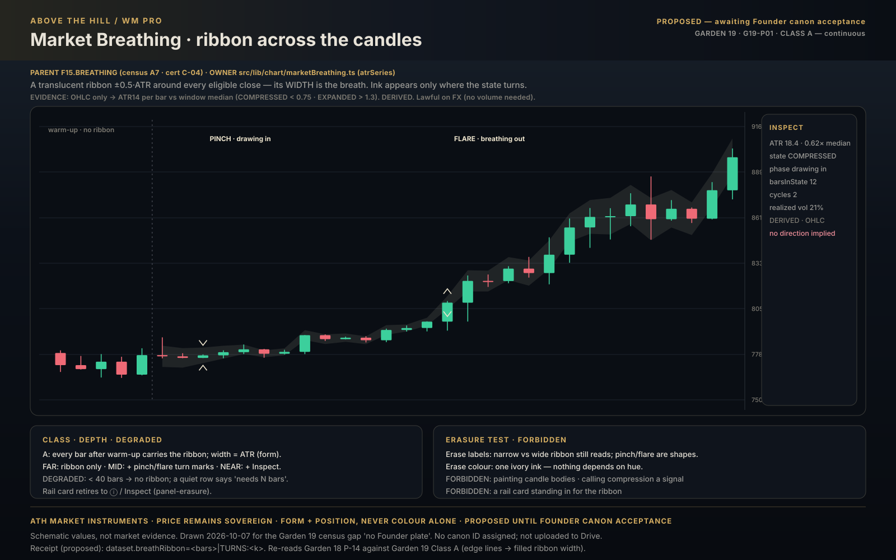
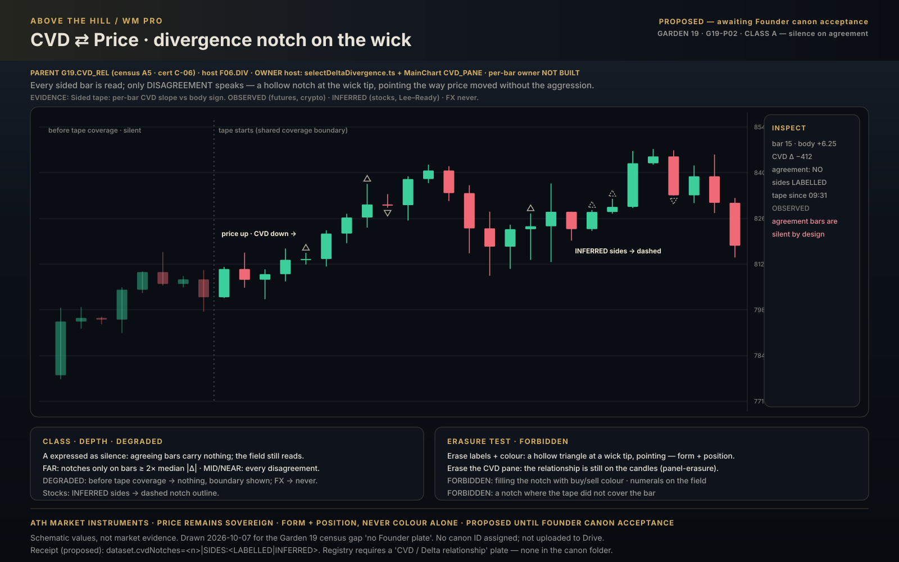
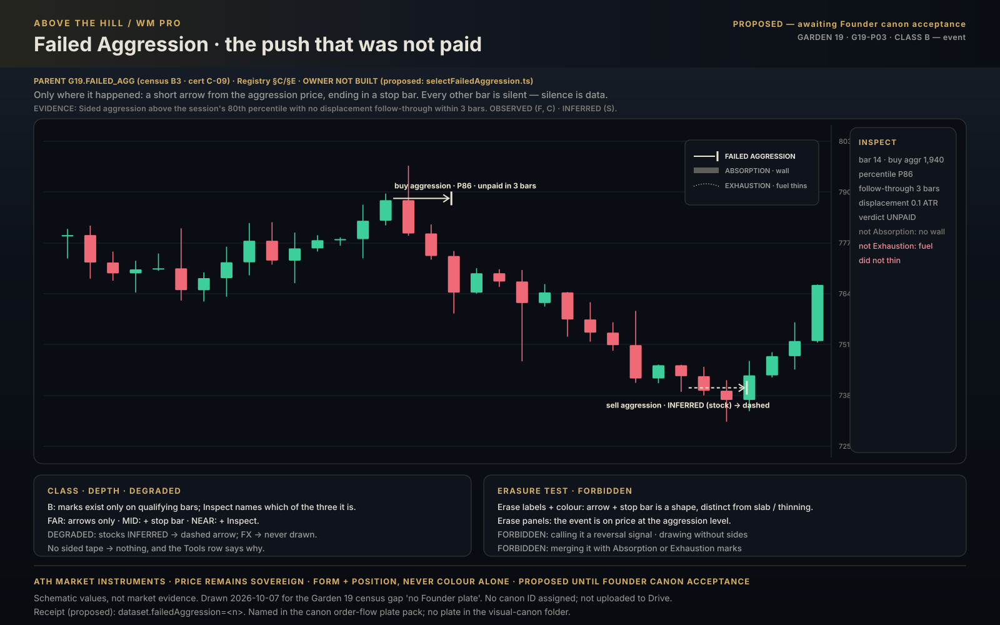
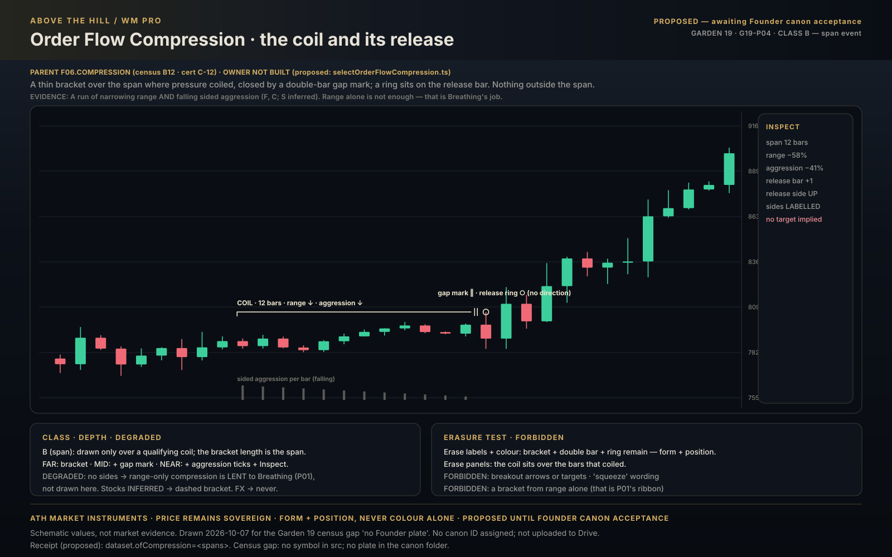
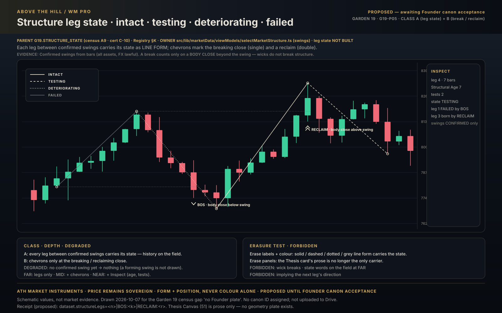
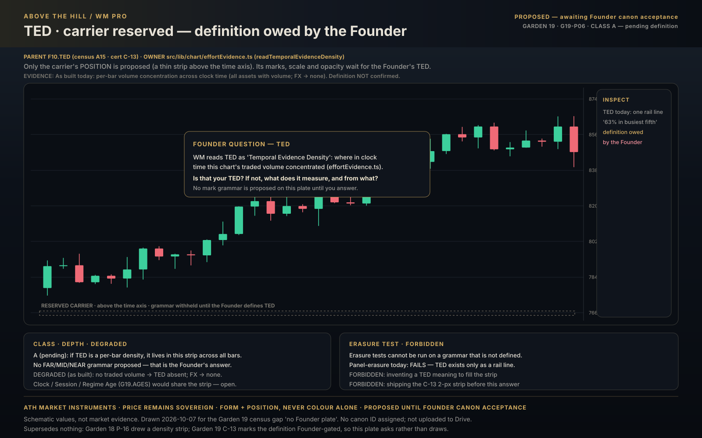

02 cvd price divergence notch
Open full size
03 failed aggression
Open full size
04 order flow compression
Open full size
05 structure leg state
Open full size
Drawn 2026-10-07 for the six inventions the Garden 19 census lists with no Founder plate: Market Breathing, CVD ⇄ price divergence notch, Failed Aggression, Order Flow Compression, Structure leg state and TED. Each follows the Garden 19 manifestation law — Class A history across the candles in subtle grammar, Class B only where the event occurred, readable by form and position with labels and colour erased. TED carries only a reserved position and the Founder question. All PROPOSED until accepted through the Founder Visual Canon process. No canon IDs assigned; not uploaded to Drive.





